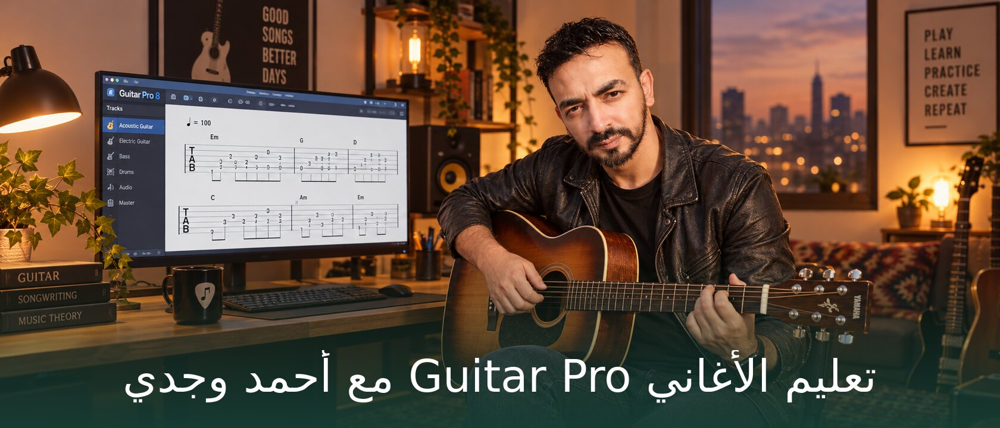
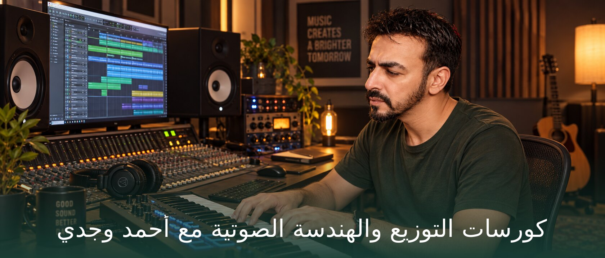
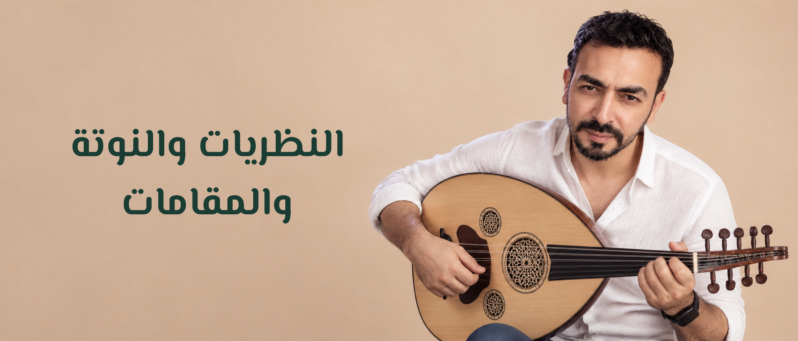
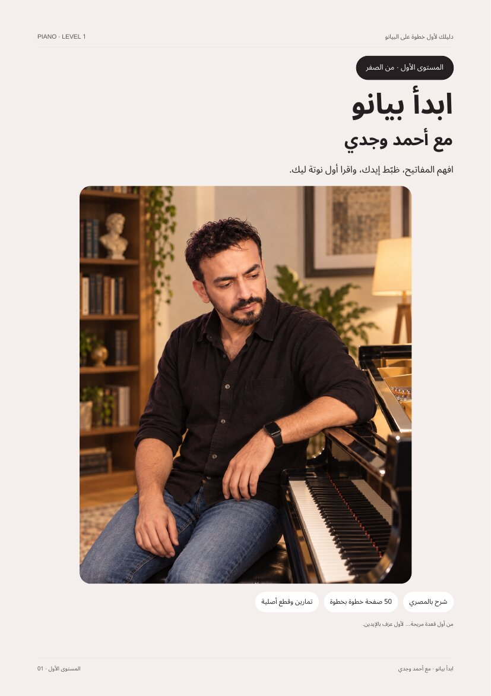
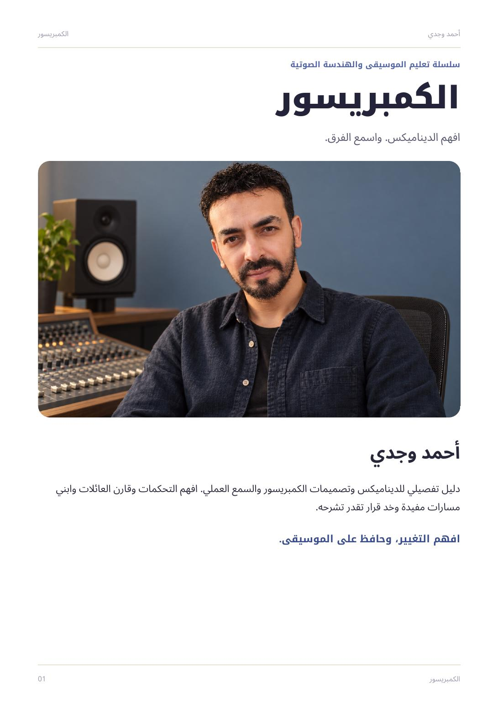
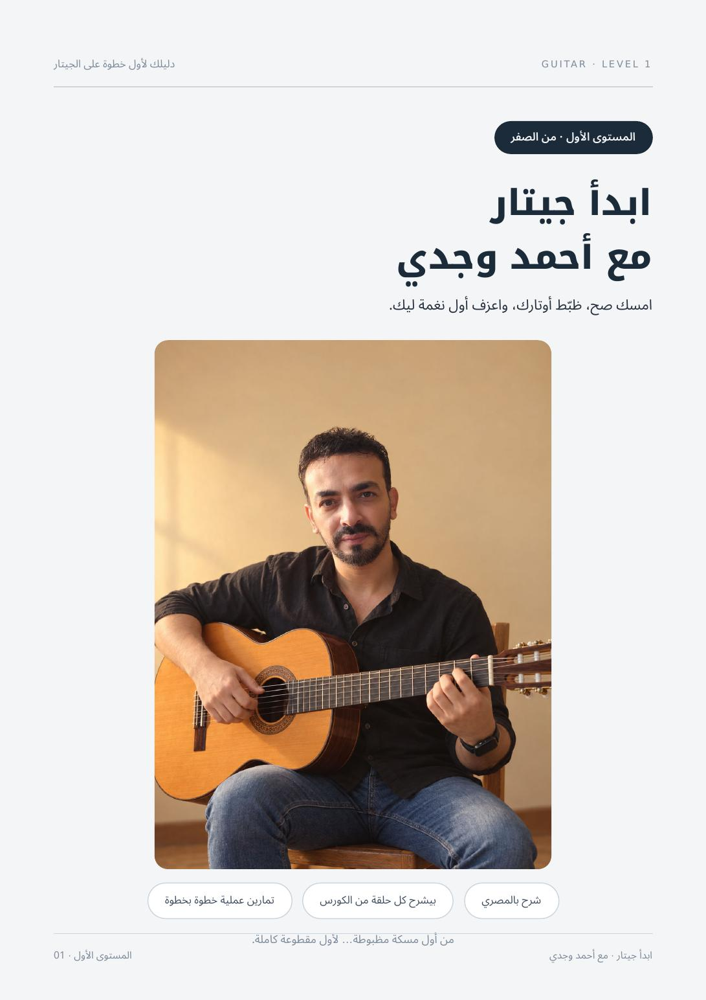
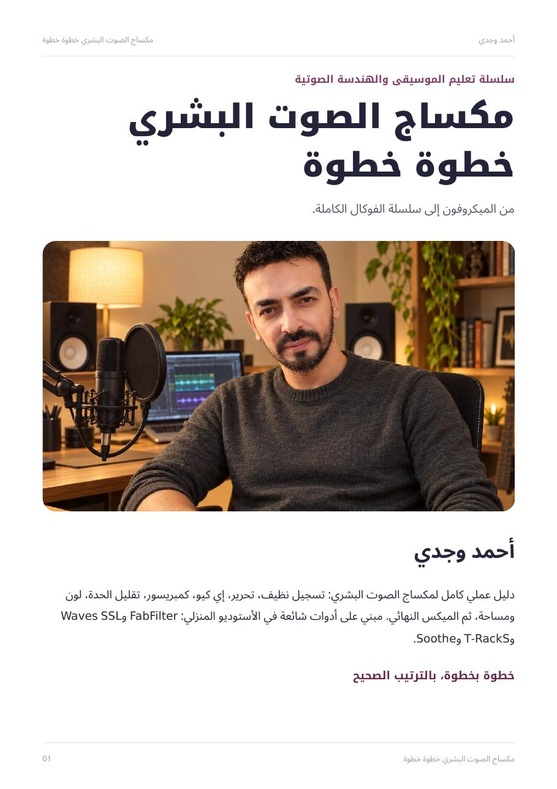
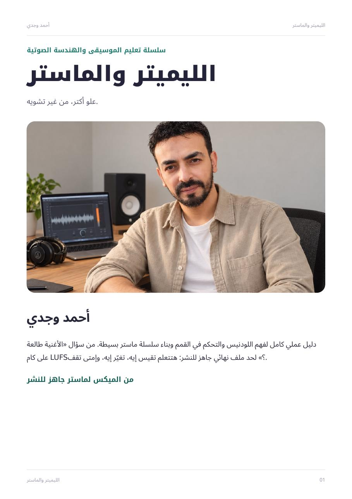
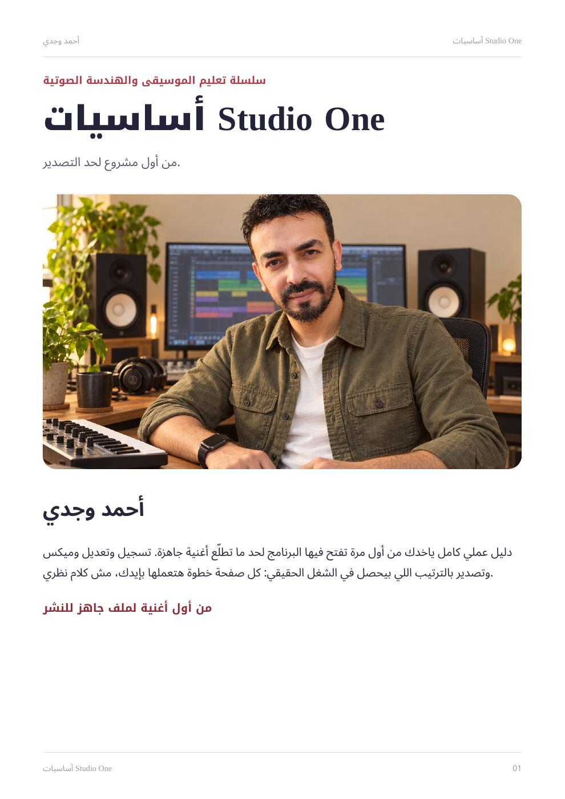

أهلًا بيك في مساحتي
موسيقى تتعلّمها.
خطوة ورا خطوة.
مع أحمد وجدي، اختار مسارك من تعليم الآلات للتلحين والتوزيع والنظريات الموسيقية. كورسات القناة هنا متقسّمة بالموضوع والمستوى، عشان تبدأ من المكان المناسب ليك.
THE AW SPACE / 01
LEARN MUSIC WITH AHMED WAGDY
اختار مسارك الموسيقي
41 قائمة تشغيل من القناة، مجمّعة حسب الموضوع وبترتيب المستويات.
تعليم البيانو
2 قوائم تشغيلكورس البيانو المستوي الثاني
تعليم الجيتار
6 قوائم تشغيلتعليم اليوكليلي
1 قوائم تشغيلازاي تتعلم Ukulele

تعليم الأغاني وGuitar Pro
1 قوائم تشغيلتعليم أغاني للجيتار والبيانو علي برنامج جيتار برو Guitar Pro

التوزيع والهندسة الصوتية
7 قوائم تشغيلالتلحين وصناعة الأغاني
4 قوائم تشغيل
النظريات والنوتة والمقامات
5 قوائم تشغيلالموسيقى والذكاء الاصطناعي
1 قوائم تشغيلالموسيقي والذكاء الاصطناعي
ثقافة موسيقية
4 قوائم تشغيلموسيقى للاستماع
2 قوائم تشغيلالمراجعات
1 قوائم تشغيلReviews مراجعات
محتوى سريع وتفاعل
5 قوائم تشغيلMY WORK · PRODUCED BY WAM
أعمالي الموسيقية
أغاني وموسيقى من ألحاني وتوزيعي، من إنتاج Wam. اسمعها هنا مباشرة أو على يوتيوب.
READ & KEEP
ركن الكتب والملفات
مساحة للقراءة، والرجوع للأفكار في أي وقت.

كتاب PDF · 50 صفحة
ابدأ بيانو - المستوى الأول (Piano Level 1)
دليلك لأول خطوة على البيانو من الصفر: افهم المفاتيح، ظبّط إيدك، واقرا أول نوتة ليك. شرح بالمصري خطوة بخطوة، مع تمارين وقطع أصلية. متاح بالعربي وبالإنجليزي.
كتاب PDF · ٢٩ صفحة
افهم الإيكولايزر مع أحمد وجدي (EQ by Ahmed Wagdy)
شرح عملي بالمصري للإيكولايزر من الصفر: الترددات وبيوت الآلات، كل أنواع الفلاتر، القاعدة الذهبية للقص والرفع، تكنيك الـ Sweep، و٨ خطوات لتشكيل أي تراك، مع جداول وخرائط سريعة للرجوع أثناء الشغل.

كتاب PDF · ٦٦ صفحة
الكمبريسور مع أحمد وجدي (The Compressor by Ahmed Wagdy)
شرح عملي بالمصري عن الكومبريسور: افهم الديناميكس والضغط الصوتي، أدواته وأنواعه، وإمتى تسيب الصوت زي ما هو. متاح بالعربي وبالإنجليزي.

كتاب PDF · ٢٠ صفحة
ابدأ جيتار مع أحمد وجدي - المستوى الأول (Guitar Level 1)
دليلك لأول خطوة على الجيتار من الصفر: امسك صح، ظبّط أوتارك، واعزف أول نغمة ليك. شرح بالمصري بيشرح كل حلقة من الكورس، مع تمارين عملية خطوة بخطوة، من أول مسكة مظبوطة لأول مقطوعة كاملة.

كتاب PDF · ٦٤ صفحة
مكساج الصوت البشري خطوة خطوة (Vocal Mixing, Step by Step)
دليل عملي كامل لمكساج الصوت البشري من الميكروفون لحد سلسلة الفوكال الكاملة: تسجيل نضيف، إيديتنج، إيكولايزر، كومبريسور، السيطرة على الحدة، اللون والمساحة، والميكس النهائي. الشغل مبني على أدوات ستوديو منزلي حقيقي: FabFilter / Waves SSL / T-RackS / Soothe. متاح بالعربي وبالإنجليزي.

كتاب PDF · ٦٠ صفحة
الليميتر والماستر (The Limiter & Mastering)
دليل عملي كامل لفهم اللودنيس والتحكم في القمم وبناء سلسلة ماستر بسيطة: من سؤال «الأغنية طالعة على كام LUFS؟» لحد ملف نهائي جاهز للنشر. هتتعلم تقيس إيه، تغيّر إيه، وإمتى تقف. متاح بالعربي وبالإنجليزي.

كتاب PDF · ٦٠ صفحة
أساسيات Studio One: من أول مشروع لحد التصدير
دليل عملي خطوة بخطوة من فتح البرنامج لأول مرة لحد أغنية جاهزة: إعداد كارت الصوت، التسجيل، تعديل التراكات، الميكسر، الإضافات، والتصدير. كل فصل فيه تمرين تطبقه بإيدك في مشروعك. متاح بالعربي وبالإنجليزي.
STAY CONNECTED
روابطي، في مكان واحد
وصول سريع للمحتوى اللي بدور عليه معاك.
A LITTLE MORE ABOUT THIS SPACE
تابعني
على يوتيوب ↗مكان واحد لكل اللي بحب أشاركه.
الفيديوهات، الكتب، والروابط… بدل ما كل حاجة تبقى في مكان، هنا البداية. اختار اللي يهمّك وخليك قريب من الجديد.